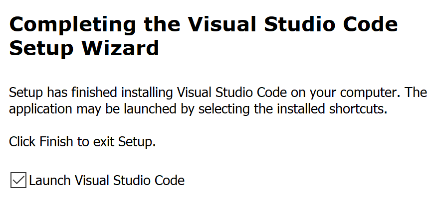

- Run / open the downloaded file.
- Accept the license agreement. Click Next.
-
You can mostly keep clicking “Next” to accept all the installation
defaults, with one exception: make sure you
enable the following three options on the “Select
Additional Tasks” screen:
☑ Add "Open with Code" action to Windows Explorer file context menu
☑ Add "Open with Code" action to Windows Explorer directory context
menu
☑ Register Code as an editor for supported file types
-
Click the Install button when you get to the end of all the
configuration screens.
-
When the installation is done, make sure that “Launch Visual Studio Code” is
checked:

...and click Finish.